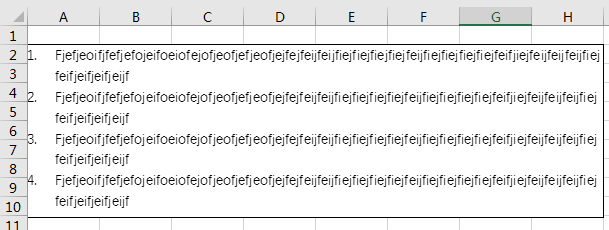
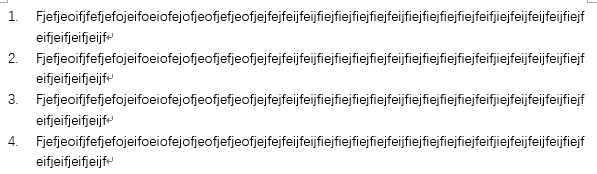
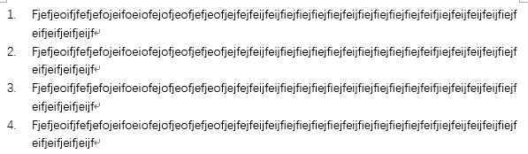

Excel
//
悬挂缩进

先打开word新建一个文档，选择标号如下图红框处所示:
输入文字如下图所示:

然后全选复制
回到excel文件中右键单击一个单元格弹出菜单，选择"选择性粘贴"
选择“Microsoft Word 文档 对象”然后按确定即可

先打开word新建一个文档，选择标号如下图红框处所示:
输入文字如下图所示:

然后全选复制
回到excel文件中右键单击一个单元格弹出菜单，选择"选择性粘贴"
选择“Microsoft Word 文档 对象”然后按确定即可